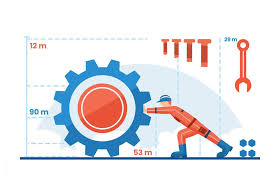

Science is a systematic, empirical process of building and organizing knowledge about the universe through observation and experimentation. It transforms curiosity into testable explanations, driving humanity forward with innovations in technology, medicine, and agriculture Beyond being a mere collection of facts, science is fundamentally a method of inquiry. Through questioning, hypothesis formulation, and rigorous testing, it allows us to understand the underlying mechanics of everything from the cosmos to microscopic cells. This pursuit of knowledge is categorized into several major branches. The natural sciences (like physics, chemistry, and biology) explore the physical and biological world, while the social sciences examine human behavior and societies. Meanwhile, applied sciences translate these theoretical discoveries into practical solutions, fundamentally shaping our daily routines, elevating our standard of living, and drastically increasing our life expectancy. By demanding empirical evidence rather than relying on unverified assumptions, science replaces fear of the unknown with verifiable truth and reason. Whether it is developing life-saving pharmaceuticals, engineering sustainable energy systems, or unlocking the mysteries of the cosmos, the continuous cycle of scientific discovery remains humanity's greatest tool for solving complex challenges and improving the future.
Mechanical engineering is a foundational and incredibly diverse discipline that applies the core principles of physics, mathematics, and materials science to design, analyze, manufacture, and maintain mechanical systems. It is the science of force, energy, and motion.Mechanical engineering is a foundational and incredibly diverse discipline that applies the core principles of physics, mathematics, and materials science to design, analyze, manufacture, and maintain mechanical systems. It is the science of force, energy, and motion.
The foundation of mechanical engineering is built upon several core branches of physics and applied science:
Mechanics: The cornerstone of the field, dealing with motion and the forces that cause it. It branches into kinematics (motion without considering forces) and dynamics (motion considering forces)
Thermodynamics: The applied science studying the relationship between heat, work, and energy. It is critical for the design of engines, turbines, and HVAC systems.
Fluid Mechanics: The study of how liquids and gases behave and interact with solid bodies, essential for aerospace, automotive, and plumbing system designs.
Materials Science: Understanding the physical and chemical properties of materials so engineers can select the right metals, polymers, or composites for a given application.
Mechanical engineers touch nearly every aspect of modern life, from microscopic medical devices to massive power-generating turbines and aerospace shuttles. Because virtually every product requires a machine to manufacture it, the field is deeply tied to both power-producing (engines, wind turbines) and power-using (refrigeration, robotics) devices. Today, engineers integrate scientific knowledge with modern software tools like Computer-Aided Design (CAD) and Computer-Aided Engineering (CAE) to simulate performance, maximize efficiency, and reduce production costs long before a physical prototype is bui

If you would like to explore this topic further,